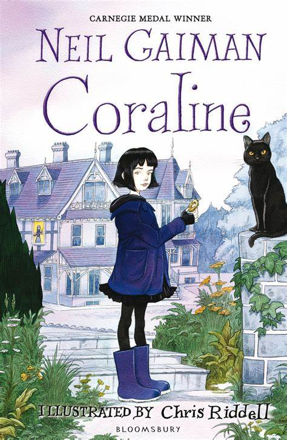

|  |
Coraline
Autor: Neil Gaiman
Certas portas não devem ser abertas. E Coraline descobre isso pouco tempo depois de chegar com os pais à sua nova casa,
um apartamento em um casarão antigo ocupado por vizinhos excêntricos e envolto por uma névoa insistente, um mundo de
estranhezas e magia, o tipo de universo que apenas Neil Gaiman pode criar.Ao abrir uma porta misteriosa na sala de casa,
a menina se depara com um lugar macabro e fascinante.
Ali, naquele outro mundo, seus outros pais são criaturas muito
pálidas, com botões negros no lugar dos olhos, sempre dispostos a lhe dar atenção, fazer suas comidas preferidas e
mostrar os brinquedos mais divertidos. Coraline enfim se sente... em casa. Mas essa sensação logo desaparece,
quando ela descobre que o lugar guarda mistérios e perigos, e a menina se dá conta de que voltar para sua verdadeira
casa vai ser muito mais difícil ― e assustador ― do que imaginava.

|
|
Não Conte a Ninguém
Autor: Harlan Coben
David Beck e sua esposa Elizabeth comemoram o aniversário de seu primeiro beijo quando uma tragédia interrompe o
clima de romance: Elizabeth é brutalmente assassinada. O caso acaba sendo resolvido e o assassino, condenado. No
entanto, David não consegue superar a morte de Elizabeth.
Depois de oito anos, ainda se lembra de todos os
detalhes. Mas é no dia do aniversário de morte de Elizabeth que a história realmente começa. Uma estranha
mensagem aparece no computador de David, uma frase que somente ele e a esposa conhecem. De repente ele
depara com o que parecia impossível - em algum lugar, de alguma maneira, Elizabeth está viva. Ele é advertido para
que não conte a ninguém e envolve-se em um sombrio e mortal mistério, sem saber que já está sendo seguido por
alguém que o tentará deter antes que descubra toda a verdade.

|
 |
Em Águas Sombrias
Autora: Paula Hawkins
Nos dias que antecederam sua morte, Nel ligou para a irmã. Jules não atendeu o telefone e simplesmente ignorou seu
apelo por ajuda. Agora Nel está morta. Dizem que ela se suicidou. E Jules foi obrigada a voltar ao único lugar do qual
achou que havia escapado para sempre para cuidar da filha adolescente que a irmã deixou para trás.
Mas Jules está com medo. Com um medo visceral. De seu passado há muito enterrado, da velha Casa do Moinho, de
saber que Nel jamais teria se jogado para a morte. E, acima de tudo, ela está com medo do rio, e do trecho que todos
chamam de Poço dos Afogamentos…
Com a mesma escrita frenética e a mesma noção precisa dos instintos humanos que cativaram milhões de leitores ao
redor do mundo em seu explosivo livro de estreia, A garota no trem, Paula Hawkins nos presenteia com uma leitura
vigorosa e que supera quaisquer expectativas, partindo das histórias que contamos sobre nosso passado e do poder
que elas têm de destruir a vida que levamos no presente.
|
|
Assassinato no Expresso do Oriente
Autora: Agatha Christie
Pouco depois da meia-noite, uma tempestade de neve pára o Expresso do Oriente nos trilhos. O luxuoso trem está
surpreendentemente cheio para essa época do ano. Mas, na manhã seguinte, há um passageiro a menos. Um
americano é encontrado morto em sua cabina, com doze facadas, e a porta estava trancada por dentro. Pistas falsas
são colocadas no caminho de Hercule Poirot para tentar mantê-lo fora de cena, mas, num dramático desenlace, ele
apresenta não uma, mas duas soluções para o crime.

|
|
A Garota no Gelo
Autor: Robert Bryndza
Seus olhos estão arregalados. Seus lábios estão entreabertos. Seu corpo está congelado. Mas ela não é a única.
Quando um jovem rapaz encontra o corpo de uma mulher debaixo de uma grossa placa de gelo em um parque ao sul de
Londres, a detetive Erika Foster é chamada para liderar a investigação de assassinato.
A vítima, uma jovem e bela socialite, parecia ter a vida perfeita. Mas quando Erika começa a cavar mais fundo,
vai ligando os pontos entre esse crime e a morte de três prostitutas, todas encontradas estranguladas, com as
mãos amarradas, em águas geladas nos arredores de Londres.
Que segredos obscuros a garota no gelo esconde? Quanto mais Erika está perto de descobrir a verdade, mais o
assassino se aproxima dela.
Com a carreira pendurada por um fio depois da morte de seu marido em sua última investigação, Erika deve agora
confrontar seus próprios demônios, bem como um assassino mais letal do que qualquer outro que já enfrentou antes.
|
|
A Paciente Silenciosa
Autor: Alex Michaelides
Um assassinato, uma verdade oculta. As raízes do silêncio são muito mais profundas do que se pode
imaginar.
Alicia Berenson escreve um diário para colocar suas ideias em ordem. Ele é tanto uma válvula de escape quanto uma
forma de provar ao seu adorado marido que está bem. Ela não consegue suportar conviver com a ideia de que está
deixando Gabriel preocupado, de que está lhe causando algum mal.
Alicia Berenson tinha 33 anos quando matou seu marido com cinco tiros. E nunca mais disse uma palavra. O
psicoterapeuta forense Theo Faber está convencido de que é capaz de tratar Alicia, depois de tantos outros
falharem. E, se ela falar, ele será capaz de ouvir a verdade?
|